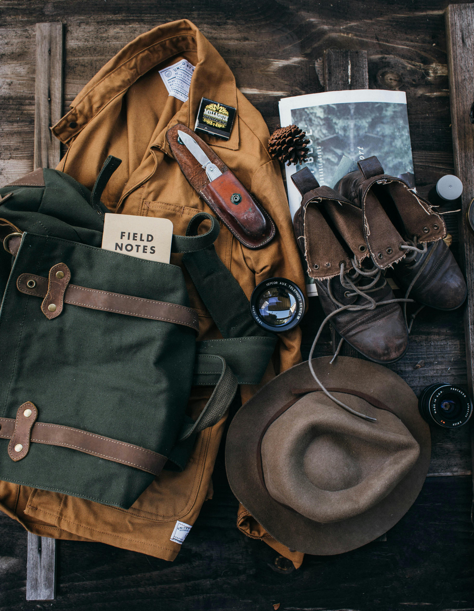

Essential Camping Gear for Beginners
If you're new to camping, choosing the right gear can be overwhelming. Here’s a list of essentials that every beginner should consider!
Learn more about essential camping gearYour ultimate guide to outdoor experiences and camping tips!
If you're new to camping, choosing the right gear can be overwhelming. Here’s a list of essentials that every beginner should consider!
Learn more about essential camping gearPicking the right campsite is key to a successful trip. Learn how to select a site based on your needs, weather, and terrain.
Learn more about choosing a campsiteOne of the best parts of camping is cooking over a fire. Here are some easy and delicious campfire recipes you can try next time!
Explore campfire cooking recipes